Actual browser captures and normal controls. Authored prototypes, not autonomous BGS outputs, production art or player research. See the results report for gaps.
Play the exact local prototype · Normal-speed captured frame sequence · Reduced-motion capture
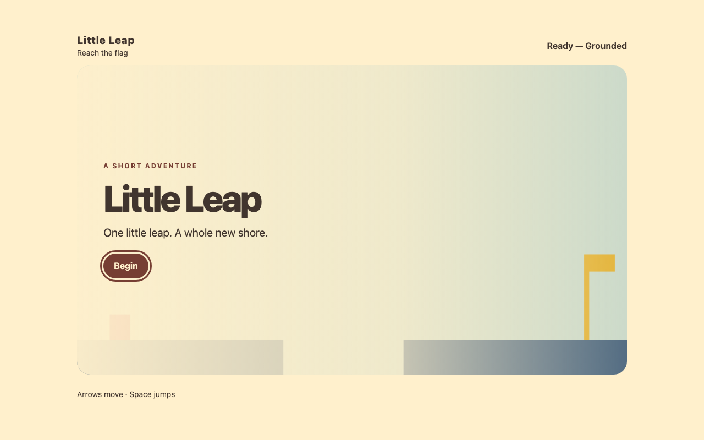
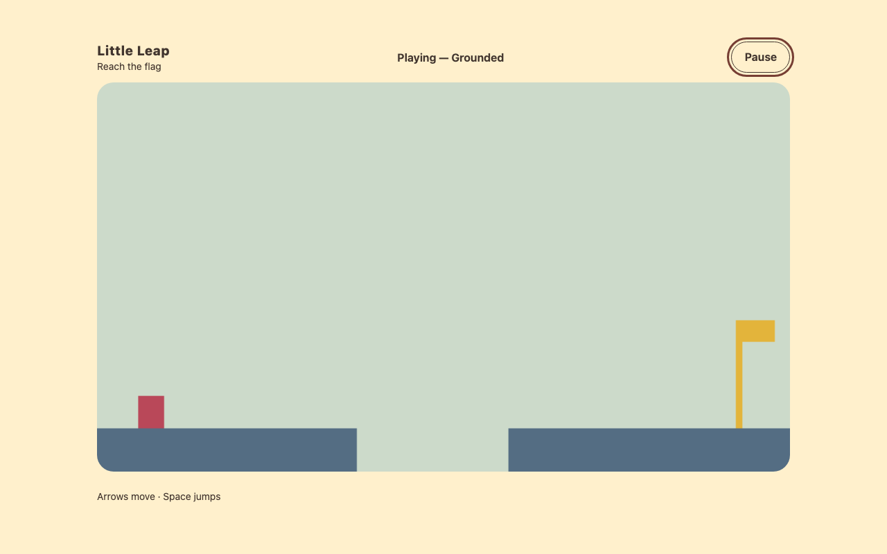
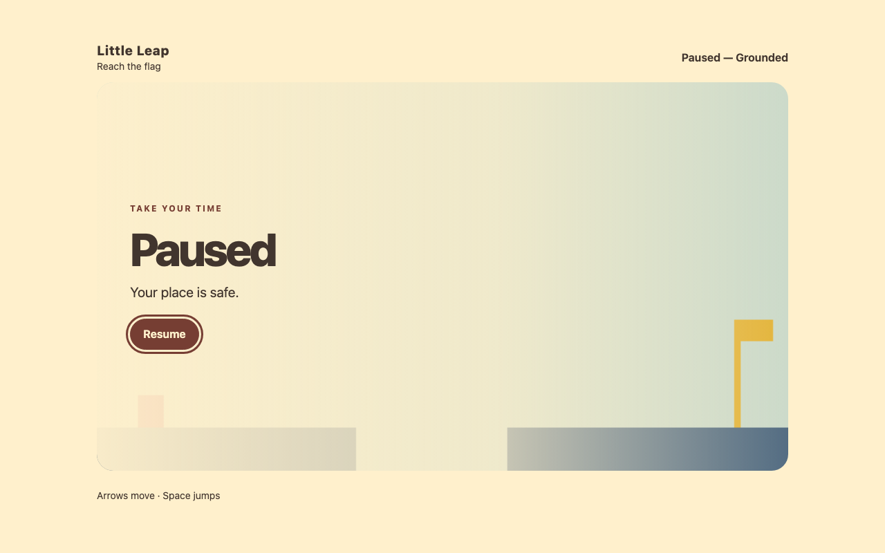
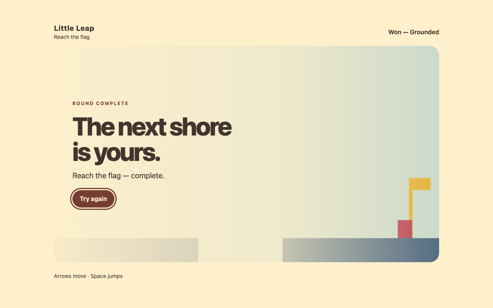
Play the exact local prototype · Normal-speed captured frame sequence · Reduced-motion capture
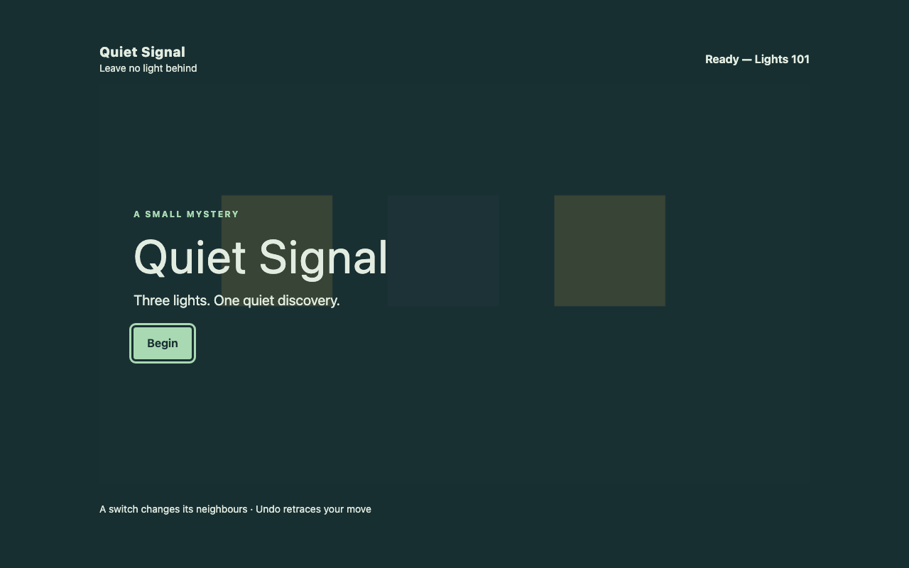
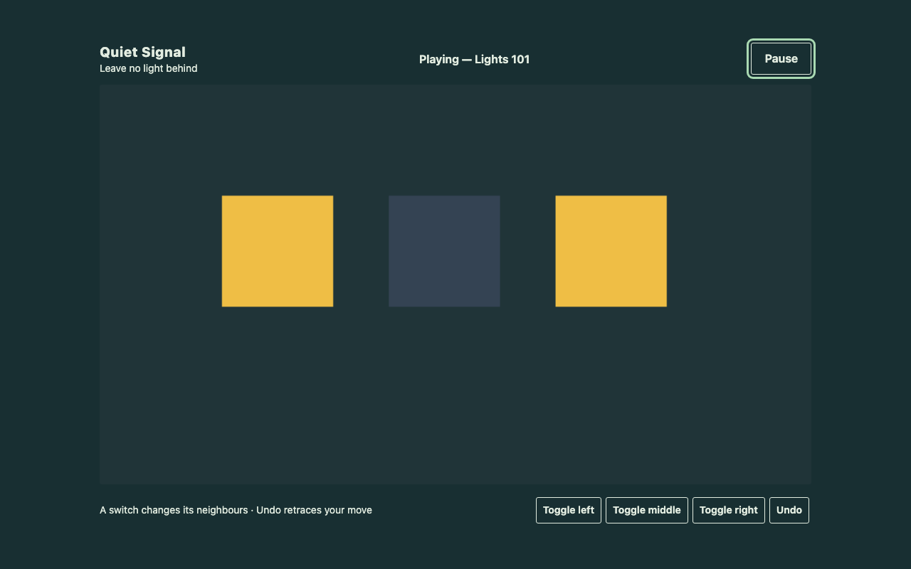
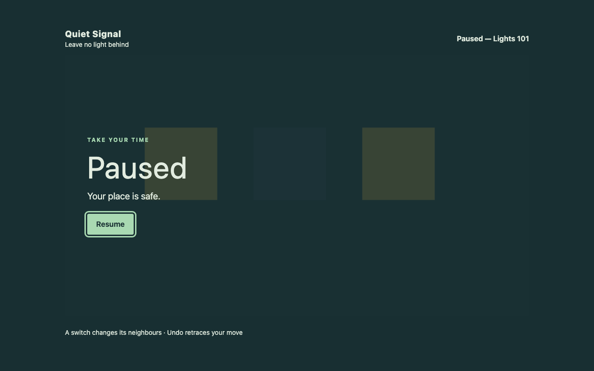
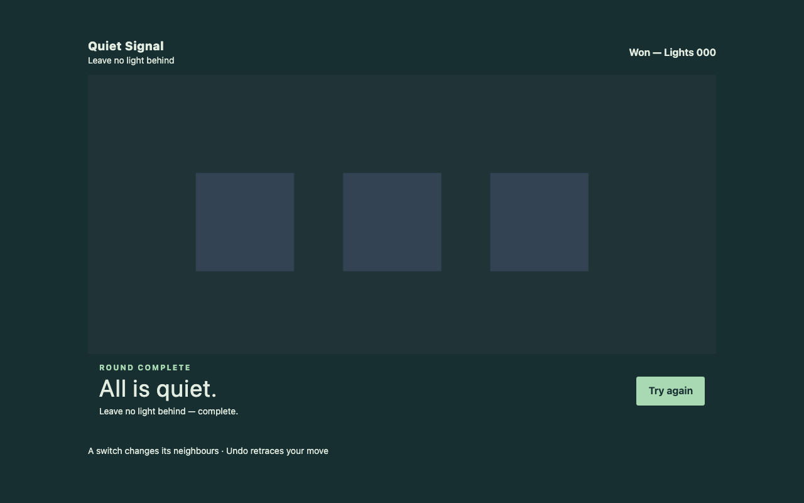
Play the exact local prototype · Normal-speed captured frame sequence · Reduced-motion capture
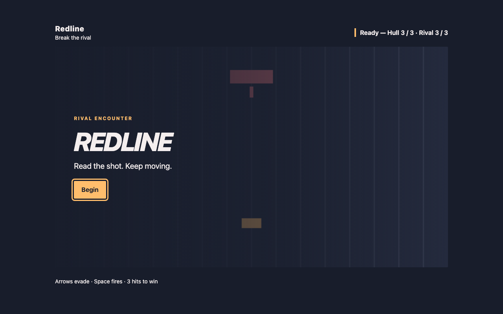
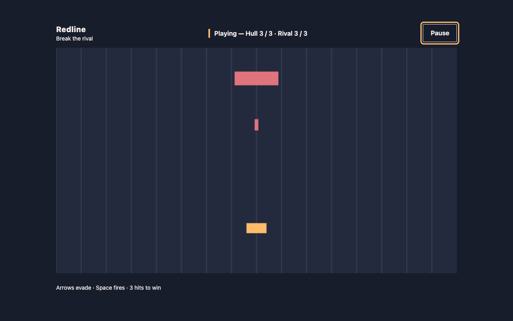
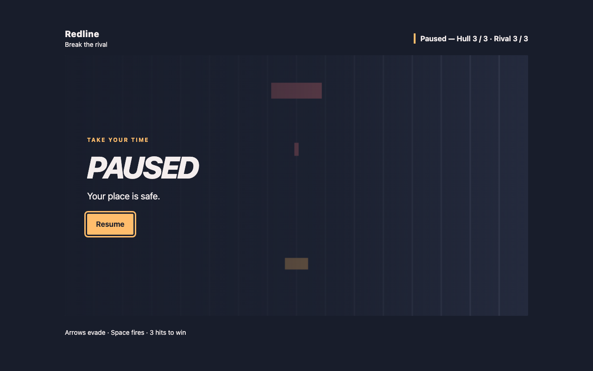
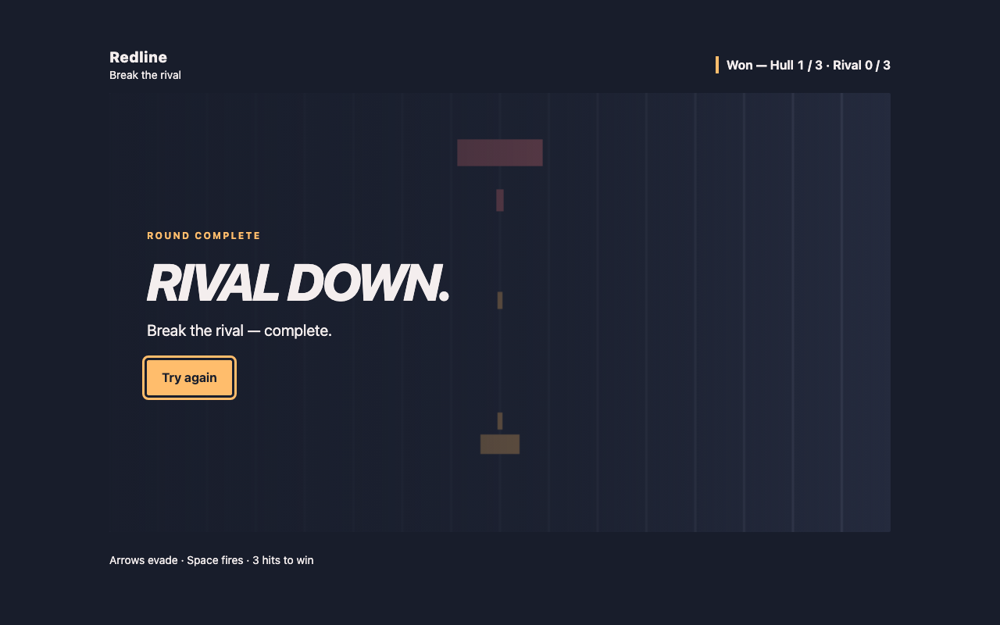
Observed board obstruction before correction · Corrected board visibility · Raw observations
No rebuild or project changes. Focus-loss pause unverified in this headless setup.
Title · HUD · Defeat result · Actual captured frames · Selected concept